Contents
WCC
clearvars -EXCEPT TestCaseWildCard
addpath('..');
CaseDir='Cases';
if exist('TestCaseWildCard')
disp(['Only running casing meeting the following wildcard (TestCaseWildCard): ' TestCaseWildCard])
else
disp('TestCaseWildCard variable doesn''t exist, running all testcases.')
TestCaseWildCard='g*';
end
TestCasesFspec=[CaseDir '/' TestCaseWildCard ];
TestCasesFspec=strrep(TestCasesFspec,'**','*');
testcasefiles=dir([TestCasesFspec '.ppmodel']);
if ispc
testcasefiles=[testcasefiles dir([TestCasesFspec '.lnk'])];
end
testcasefiles
Compare=[];
WinHandle=[];
for Icase=1:length(testcasefiles)
CaseName=char(testcasefiles(Icase).name);
if ispc && strcmpi(CaseName(end-3:end),'.lnk')
[path,name,ext]=fileparts(getTargetFromLink([testcasefiles(Icase).folder '\' CaseName]));
CaseName=[name ext];
testcasefiles(Icase).folder=path;
end
[CaseName]
if isempty(str2num(CaseName(1)))
fprintf('Executing test case %s...\n',CaseName)
addpath(testcasefiles(Icase).folder);
if ishandle(WinHandle)
delete(WinHandle)
else
delete(findall(0,'tag','figure1'));
end
WCC - ParaPowerGUI_V2
WinHandle=ParaPowerGUI_V2;
Handles=guidata(WinHandle);
hObject=Handles.loadbutton;
EventData=[];
WCC - ParaPowerGUI_V2
ParaPowerGUI_V2('loadbutton_Callback',hObject,EventData,Handles,CaseName);
Handles=guidata(WinHandle);
tic
WCC - ParaPowerGUI_V2
ParaPowerGUI_V2('RunAnalysis_Callback',hObject,EventData,Handles);
ExecTime=toc;
Results=getappdata(WinHandle,'Results');
rmpath(testcasefiles(Icase).folder)
CaseExists=true;
else
fprintf('Can''t execute ''%s''. Name cannot start with a number.\n',CaseName)
CaseExists=false;
end
if CaseExists
if length(Results)>1
Results=Results(1)
end
NewResults.Tprnt =Results.getState('Thermal');
NewResults.MeltFrac=Results.getState('MeltFrac');
MI=Results.Model;
Fi=1;
NewResults.DoutT(:,1+Fi)=max(reshape(NewResults.Tprnt,[],length(MI.GlobalTime)),[],1);
NewResults.DoutM(:,1+Fi)=max(reshape(NewResults.Tprnt,[],length(MI.GlobalTime)),[],1);
NewResults.DoutT(:,1)=MI.GlobalTime;
NewResults.DoutM(:,1)=MI.GlobalTime;
NewResults.ExecTime=ExecTime;
NewResults.DateTime=datetime;
NewResults.Desc=CaseName(1:max(find(CaseName=='.'))-1);
NewResults.Computer=computer();
NewResults.Matlab=ver('matlab');
if exist([testcasefiles(Icase).folder '/' name '.ppmodel'],'file')
ResultsFile=[testcasefiles(Icase).folder '/' name, '_Results.ppmodel'];
if exist(ResultsFile,'file')
OldResults=load(ResultsFile,'-mat');
if ~isfield(OldResults,'NewResults')
disp([ResultsFile ' uses older version of stored results file. ''Results'' variable is now named ''NewResults''.'])
OldResults=OldResults.('Results');
else
OldResults=OldResults.('NewResults');
end
Compare{Icase}.Desc=NewResults.Desc;
Compare{Icase}.DeltaTime=NewResults.ExecTime / OldResults.ExecTime;
Compare{Icase}.GlobalTime=MI.GlobalTime;
DoFList={'Tprnt' 'MeltFrac'};
try
if size(NewResults.Tprnt) == size(OldResults.Tprnt)
for Idof=1:length(DoFList)
if isfield(NewResults,DoFList{Idof})
Compare{Icase}.DOFdesc{Idof}=DoFList{Idof};
Compare{Icase}.DOFdelt{Idof}=OldResults.(DoFList{Idof}) - NewResults.(DoFList{Idof});
end
end
DoFList={'DoutT' 'DoutM'};
for Idof=1:length(DoFList)
if isfield(NewResults,DoFList{Idof})
Compare{Icase}.DOFdesc{end+1}=DoFList{Idof};
Compare{Icase}.DOFdelt{end+1}=OldResults.(DoFList{Idof}) - NewResults.(DoFList{Idof});
end
end
else
Compare{Icase}.DOFdesc={'N/A'};
Compare{Icase}.DOFdelt=[];
disp(['Saved case does not match current case for ' NewResults.Desc ]);
end
catch ME
Compare{Icase}=[];
Compare{Icase}.Desc='';
Compare{Icase}.DOFdelt={[]};
Compare{Icase}.DOFdesc={''};
disp('Previous data comparison impossible')
end
else
fprintf('Results file not found. A new one will be created (%s)\n', ResultsFile);
TestCaseModel=Results.Case;
save (ResultsFile,'-mat','NewResults', 'TestCaseModel')
end
else
disp('Results file not requested.')
end
fprintf('Complete.\n')
if 1
figure(2);clf; pause(.001)
StateN=length(MI.GlobalTime);
subplot(1,2,1);
Visualize(sprintf('t=%1.2f ms, State: %i of %i',MI.GlobalTime(end), StateN,length(NewResults.Tprnt(1,1,1,:))),MI ...
,'state', NewResults.Tprnt(:,:,:,StateN) ...
,'scaletitle', 'Temperature' ...
)
subplot(1,2,2);
Visualize(sprintf('t=%1.2f ms, State: %i of %i',MI.GlobalTime(end), StateN,length(NewResults.MeltFrac(1,1,1,:))),MI ...
,'state', NewResults.MeltFrac(:,:,:,StateN) ...
,'scaletitle', 'Melt Fraction' ...
)
snapnow
end
end
end
DOFDesc={};
CaseDesc={};
for I=1:length(Compare)
if ~isempty(Compare{I}.Desc)
CaseDesc{I}=Compare{I}.Desc;
for J=1:length(Compare{I}.DOFdelt)
if size(Compare{I}.DOFdelt{J}(:))==2
PlotCompare(I,J)=sum((Compare{I}.DOFdelt{J}(:)).^2);
else
PlotCompare(I,J)=sum((Compare{I}.DOFdelt{J}(:,2)).^2);
end
DOFDesc{J}=Compare{I}.DOFdesc{J};
DeltaTime(I)=Compare{I}.DeltaTime;
end
end
end
WCC - figure 10
figure(10);
clf
NumCols=2;
NumRows=ceil((1+length(DOFDesc))/NumCols);
for I=1:length(DOFDesc)
subplot(NumRows,NumCols,I+1)
barh(PlotCompare(:,I));
set(gca,'yticklabel',strrep(CaseDesc,'_',' '))
xlabel('Sum[RMS(Cur-Canon)]')
title(DOFDesc{I})
set(gca,'xscal','log')
end
if exist('DeltaTime','var')
subplot(NumRows,NumCols,1)
barh(DeltaTime)
set(gca,'yticklabel',strrep(CaseDesc,'_',' '))
title('Wall Time (Current/Canon)')
xlabel('time (s)')
end
snapnow
Only running casing meeting the following wildcard (TestCaseWildCard): g*
testcasefiles =
6×1 struct array with fields:
name
folder
date
bytes
isdir
datenum
CaseName =
'g001_SimpleColumn.ppmodel'
Executing test case g001_SimpleColumn.ppmodel...
stop button functionality is not implemented in this GUI yet.
File 'PostProcessResults.mlapp' doesn't exist, so Parametric Post Processor button is disabled.
Warning: Cannot load an object of class 'PPMatSCPCM':
Its class cannot be found.
Warning:
The following materials will be removed from the library just loaded.
It is likely that there is no class file for that material type.
6: Ga_SC, Type Unknown
Warning: Cannot load an object of class 'PPMatSCPCM':
Its class cannot be found.
Warning:
The following materials will be removed from the library just loaded.
It is likely that there is no class file for that material type.
6: Ga_SC, Type Unknown
Transient Analysis
advancing
Transient Analysis
Warning: Cannot load an object of class 'PPMatSCPCM':
Its class cannot be found.
Warning:
The following materials will be removed from the library just loaded.
It is likely that there is no class file for that material type.
6: Ga_SC, Type Unknown
Complete.
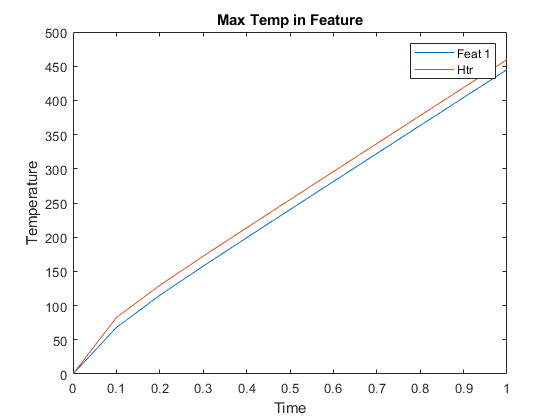 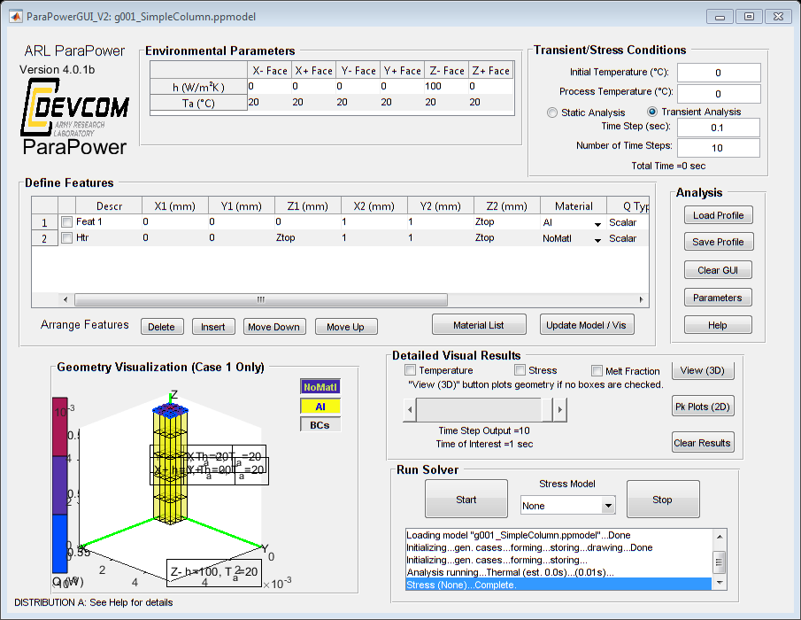 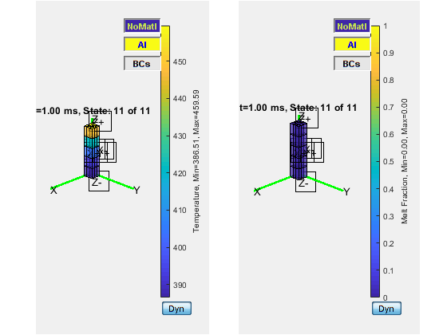
CaseName =
'g001_SimpleColumn_Results.ppmodel'
Executing test case g001_SimpleColumn_Results.ppmodel...
stop button functionality is not implemented in this GUI yet.
File 'PostProcessResults.mlapp' doesn't exist, so Parametric Post Processor button is disabled.
Warning: Cannot load an object of class 'PPMatSCPCM':
Its class cannot be found.
Warning:
The following materials will be removed from the library just loaded.
It is likely that there is no class file for that material type.
6: Ga_SC, Type Unknown
Transient Analysis
advancing
Transient Analysis
Complete.
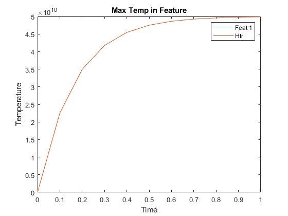 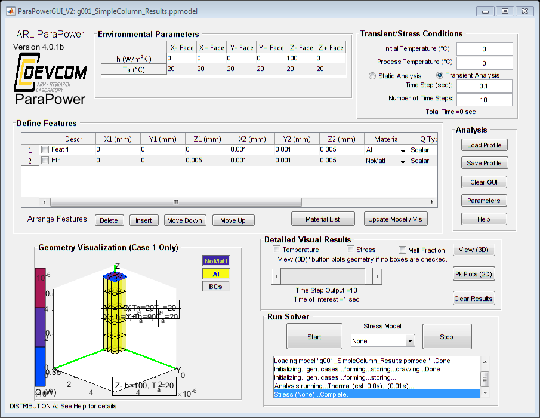
CaseName =
'g002_SimpleColumnPCM.ppmodel'
Executing test case g002_SimpleColumnPCM.ppmodel...
stop button functionality is not implemented in this GUI yet.
File 'PostProcessResults.mlapp' doesn't exist, so Parametric Post Processor button is disabled.
Warning: Cannot load an object of class 'PPMatSCPCM':
Its class cannot be found.
Warning:
The following materials will be removed from the library just loaded.
It is likely that there is no class file for that material type.
6: Ga_SC, Type Unknown
Warning: Cannot load an object of class 'PPMatSCPCM':
Its class cannot be found.
Warning:
The following materials will be removed from the library just loaded.
It is likely that there is no class file for that material type.
6: Ga_SC, Type Unknown
Transient Analysis
advancing
Transient Analysis
Warning: Cannot load an object of class 'PPMatSCPCM':
Its class cannot be found.
Warning:
The following materials will be removed from the library just loaded.
It is likely that there is no class file for that material type.
6: Ga_SC, Type Unknown
Complete.
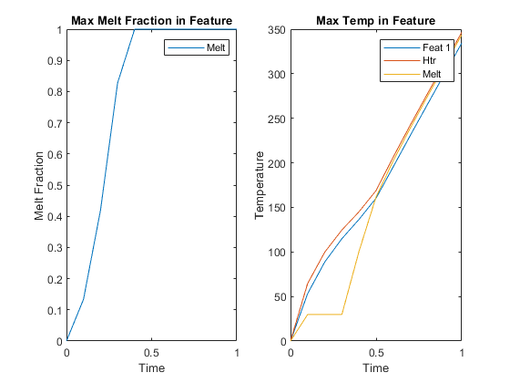 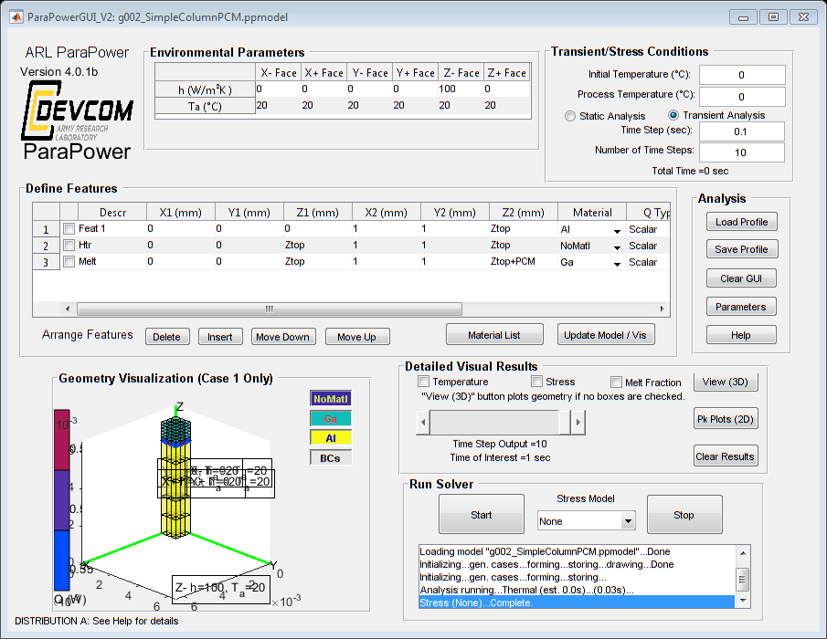
CaseName =
'g002_SimpleColumnPCM_Results.ppmodel'
Executing test case g002_SimpleColumnPCM_Results.ppmodel...
stop button functionality is not implemented in this GUI yet.
File 'PostProcessResults.mlapp' doesn't exist, so Parametric Post Processor button is disabled.
Warning: Cannot load an object of class 'PPMatSCPCM':
Its class cannot be found.
Warning:
The following materials will be removed from the library just loaded.
It is likely that there is no class file for that material type.
6: Ga_SC, Type Unknown
Transient Analysis
advancing
Transient Analysis
Complete.
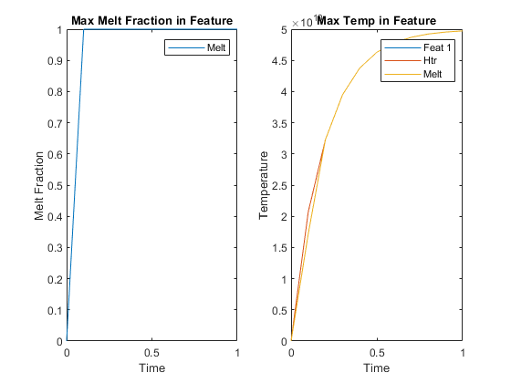 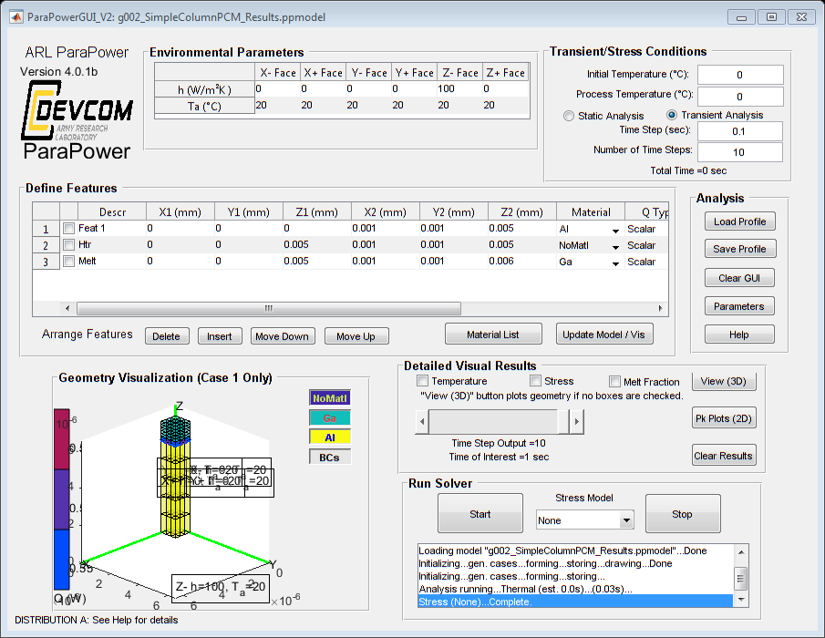 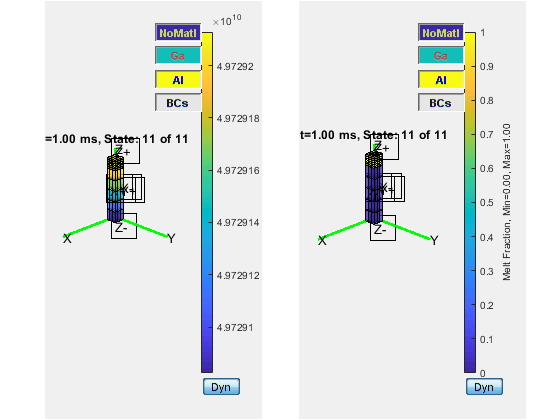
CaseName =
'g003_SimpleColumnVar.ppmodel'
Executing test case g003_SimpleColumnVar.ppmodel...
stop button functionality is not implemented in this GUI yet.
File 'PostProcessResults.mlapp' doesn't exist, so Parametric Post Processor button is disabled.
Warning: Cannot load an object of class 'PPMatSCPCM':
Its class cannot be found.
Warning:
The following materials will be removed from the library just loaded.
It is likely that there is no class file for that material type.
6: Ga_SC, Type Unknown
Warning: Cannot load an object of class 'PPMatSCPCM':
Its class cannot be found.
Warning:
The following materials will be removed from the library just loaded.
It is likely that there is no class file for that material type.
6: Ga_SC, Type Unknown
Transient Analysis
advancing
Transient Analysis
Transient Analysis
advancing
Transient Analysis
Results =
Thermal: 2x3x6x11
MeltFrac: 2x3x6x11
Stress: 0x0
PPResults with properties:
Model: [1×1 struct]
Case: [1×1 PPTCM]
TimeDate: 7.3791e+05
StatesAvail: {'Thermal' 'MeltFrac' 'Stress'}
Version: 'V1.0'
Warning: Cannot load an object of class 'PPMatSCPCM':
Its class cannot be found.
Warning:
The following materials will be removed from the library just loaded.
It is likely that there is no class file for that material type.
6: Ga_SC, Type Unknown
Complete.
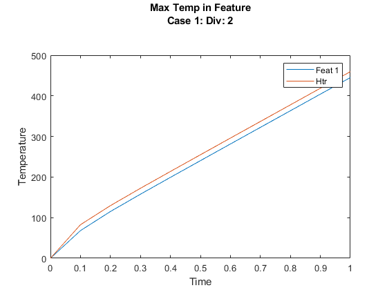 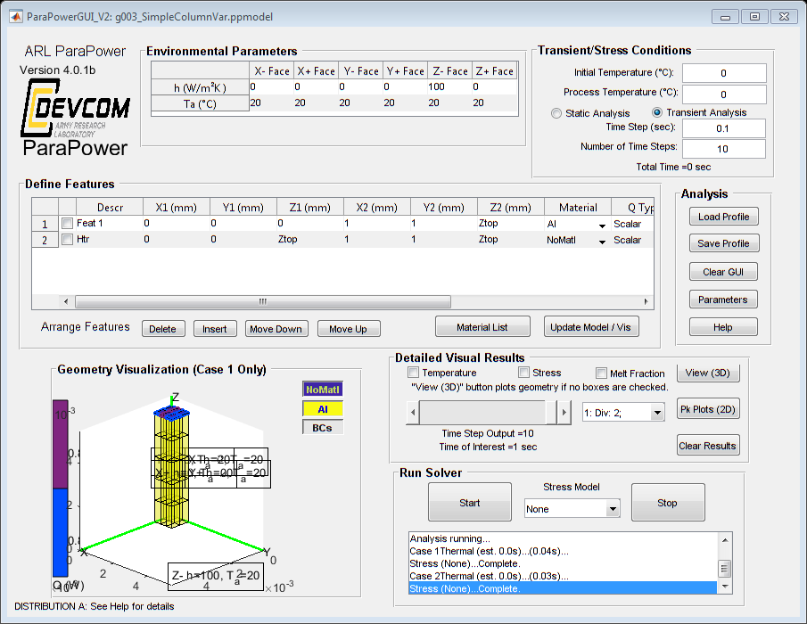
CaseName =
'g003_SimpleColumnVar_Results.ppmodel'
Executing test case g003_SimpleColumnVar_Results.ppmodel...
stop button functionality is not implemented in this GUI yet.
File 'PostProcessResults.mlapp' doesn't exist, so Parametric Post Processor button is disabled.
Warning: Cannot load an object of class 'PPMatSCPCM':
Its class cannot be found.
Warning:
The following materials will be removed from the library just loaded.
It is likely that there is no class file for that material type.
6: Ga_SC, Type Unknown
Transient Analysis
advancing
Transient Analysis
Complete.

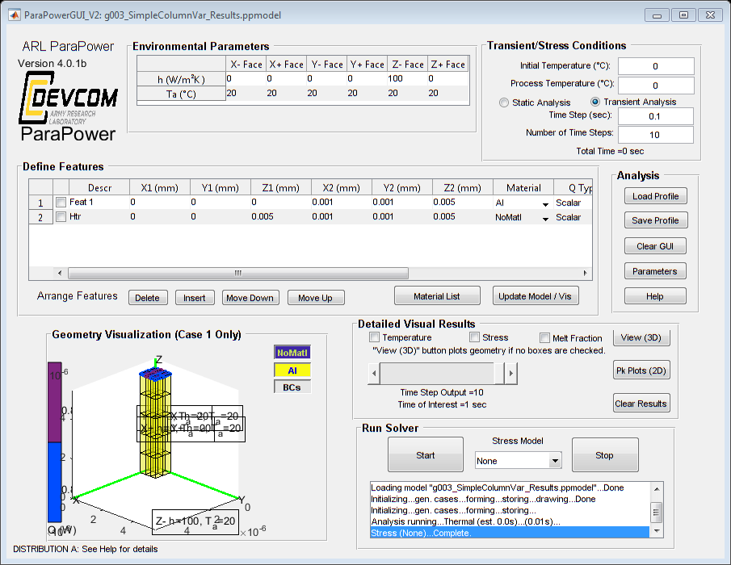 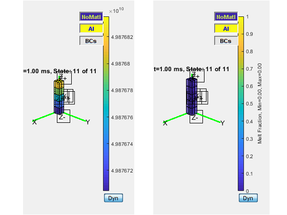 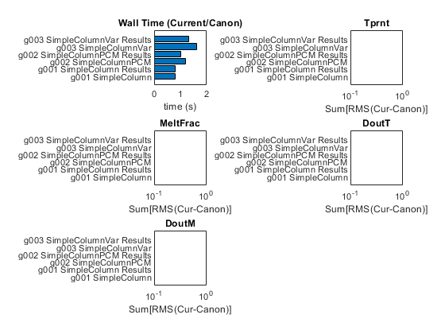